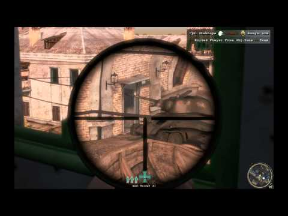

Just wondered if there is a way to make the scoped crossbow smoother when moving the mouse when scoped?.. It just does not feel 100% smooth
is there anything you can put into the config to change this?

Just wondered if there is a way to make the scoped crossbow smoother when moving the mouse when scoped?.. It just does not feel 100% smooth
is there anything you can put into the config to change this?
I think it’s more that you have a lower FOV but your turn rate stays the same.
It’s the same thing with the ACOG scope in CoD4.
what is the best resolution to run the game in to avoid this because I am running it fairly low res because I don’t have a lot of ram…
Long story but my computer will only properly recognize twined ram… And am planning to buy some soon.
I somehow wish the scope could be like this

My only beef with the crossbow scope is trying to fire while scoped underwater. I don’t have any issue with it out of the water, but then again I run at the smallest 16:10 resolution available.
at 1680x1050 it slows down so much it’s unplayable, so I rarely use the crossbow zoom
I play at 1600*900 with a FOV of 90 and the bow isn’t very smooth. Even going down to 70 doesn’t help.
this, but I’m on really old hardware so I can’t really complain.
Fuck I just realized I wrote the wrong resolution, it’s 5040x1050. I am also running on ancient hardware with a new-ish graphics card.
My rig isn’t even all that great and I get nothing but smooth sailing with the crossbow out
We mean when you use the scope. The aiming movement isn’t smooth.
That’s because your fidgety computer-man hands aren’t used to near consolesque decreases in FOV
it would be great to try it at 60fps, but the fps counter goes from green to red(7-11fps) as soon as I turn on the zoom
when I use the suit zoom it is fine though so it must be a different zoom?
Is there any way to swap the scopes zoom so that it is the same as the suit zoom?
Why the fuck are people talking about fps when this is an aim acceleration issue?
After playing though BM about 3 or 4 times I have to admit, the zoom style isn’t so great in practice, it takes longer to line up your shot then necessary, as nice as it looks, I find the old zoom style is just more fun and efficient to use.
Maybe without the scope model it should be smoother. I mean like in hl.
in my case it’s an FPS issue though
How did you get acceleration from the word “choppy”?
Founded in 2004, Leakfree.org became one of the first online communities dedicated to Valve’s Source engine development. It is more famously known for the formation of Black Mesa: Source under the 'Leakfree Modification Team' handle in September 2004.